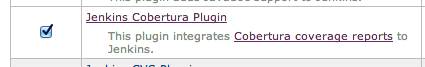
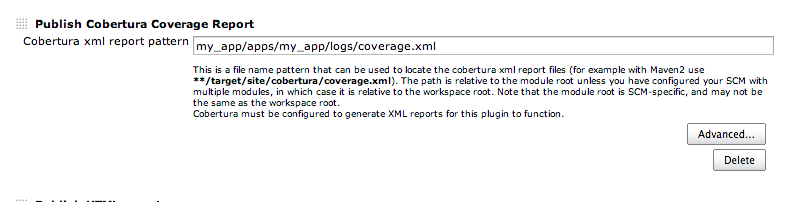
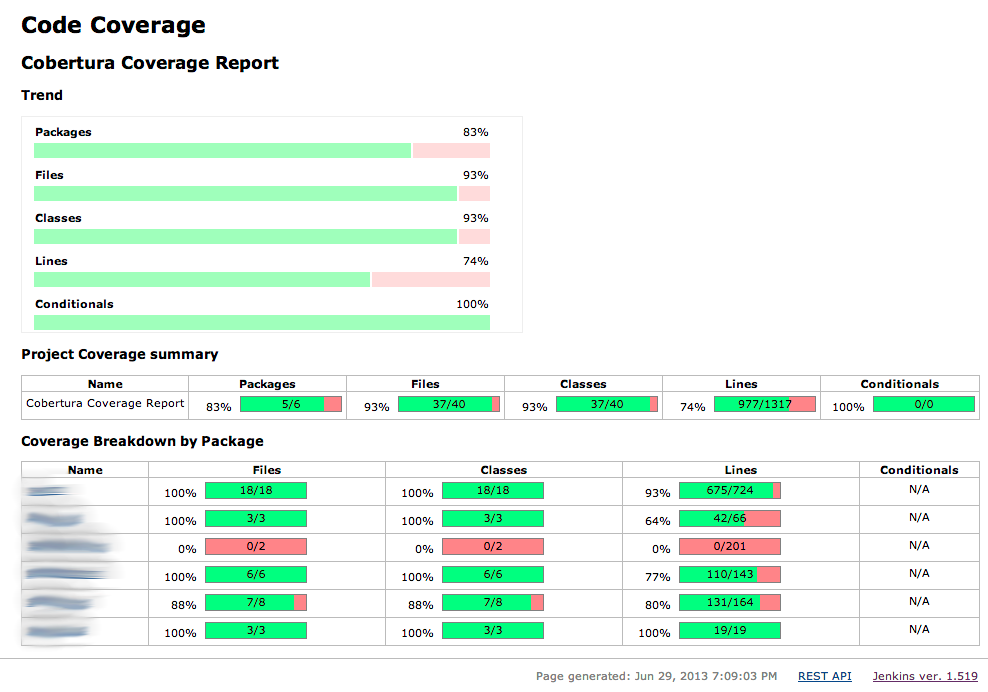

Common Test: Cobertura Coverage report for Jenkins using covertool
TweetIntroduction
UPDATE: There's an example at github with a template for a complete otp/rebar application, being builded at this jenkins.
Aside from what the cover application can offer in terms of code coverage reports, we can also get some "nicer" graphs for our erlang projects, integrated with Jenkins, by using covertool to convert the coverage information into the cobertura format.
Setting up covertool
If you're using rebar, then you can just add covertool as a dependency (here's the repo). If not, you can clone the repo by yourself. Either way, (manually or through your own Makefile), run make at the top level directory afterwards. You will end up with an executable file named covertool
$ ls -las deps/covertool/covertool 40 -rwxr-xr-x 1 user group 19739 Jun 28 23:26 deps/covertool/covertool
Exporting cover data
You will need to make the cover application export its data. If you're using rebar, just add this to your cover.spec file:
{export, "logs/cover.data"}.
Otherwise, you can use cover:export/1, either manually or from your own build scripts.
Sample run
This will create a coverage.xml xml file that you can publish from Jenkins.
$ covertool -output logs/coverage.xml -cover logs/cover.data -src src -appname my_app
NOTE: It's highly recommended that you setup a rebar hook or a Makefile target to run this right after your common tests are run.
Publishing in Jenkins
Install the Cobertura Plugin, from the Manage Jenkins -> Manage plugins section:
This will add a new Post Build Action that you can add to your job, which is the Publish Cobertura Coverage Report:
After your job builds, you will see a new link on the left, the Coverage Report link, if you click on it, you should see something similar to this:
On the left, the name of the "packages" appear (in this case, several packages appear because the source tree has subdirectories), and you can navigate through them, see the files in them, and also click on the files to see the source and the actual lines covered. Nice!

{kind=link}
{kind=link}
{kind=link}